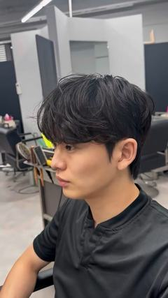

원하는 스타일이 있다면
사진의 느낌을,
고객님에게 맞게.
좋아하는 부분을 먼저 여쭙고 얼굴·두상·모질과 평소 옷차림을 살펴봅니다. 앞머리 길이, 볼륨과 질감을 조정해 원하는 분위기를 고객님께 맞춥니다.
같은 스타일도, 어울리는 디테일은 다릅니다.
실제로 달라지는 부분 보기 ↓IMAGE DIRECTING STUDIO 홍대상수역점
원하는 스타일이 있어도, 아직 잘 몰라도.
라이프스타일을 살펴, 나에게 맞는 변화를 제안합니다.
01 / START WITH YOU
원하는 사진이 있어도, 말로 설명하기 어려워도.
지금의 고민부터 시작하면 됩니다.
원하는 스타일이 있다면
좋아하는 부분을 먼저 여쭙고 얼굴·두상·모질과 평소 옷차림을 살펴봅니다. 앞머리 길이, 볼륨과 질감을 조정해 원하는 분위기를 고객님께 맞춥니다.
같은 스타일도, 어울리는 디테일은 다릅니다.
실제로 달라지는 부분 보기 ↓
아직 정하지 못했다면
원하는 인상을 모르셔도 괜찮습니다. 현재의 매력을 살리는 방향과 새로운 인상을 더하는 방향을 제안하고, 어울리는 이유를 설명해드립니다.
선택은 고객님이, 선택의 근거는 함께.
실제로 달라지는 부분 보기 ↓손질이 걱정된다면
아침에 쓸 수 있는 시간과 드라이·제품 사용 습관부터 여쭙습니다. 그에 맞는 디자인을 제안하고 집에서 따라 할 손질 순서를 알려드립니다.
미용실에서의 완성, 내일 아침의 방법까지.
실제로 달라지는 부분 보기 ↓02 / REAL CHANGE
토르소의 실제 시술 전후입니다.
누르지 않아도 자동으로 바뀝니다.


앞머리는 가볍게 흐르고, 귀 주변과 목선은 또렷하게. 길이감의 개성은 살리면서 한결 정돈되고 여유로운 분위기를 연출합니다.


뒤·옆으로 정리된 머릿결과 또렷한 귀 주변을 살펴보세요.


옆으로 흐르는 앞머리와 둥근 윗머리의 형태를 비교해보세요.
03 / FIND YOUR MOOD
움직이는 실제 작품과 함께 선택의 이유를 살펴보세요.
아직 고르지 못해도, 상담에서 함께 찾을 수 있습니다.

에포트리스 · 에어리 · 내추럴
힘을 준 티 없이 자연스럽게 흐르는 결
시스루 · 세미리프 · 쉐도우 ↗

슬릭 · 테일러드 · 시크
정교한 실루엣으로 드러내는 선명한 남성미
슬릭댄디 · 드롭 · 크롭 ↗

빈티지 · 러기드 · 텍스처
거친 듯 입체적인 결로 드러내는 자유로운 개성
텍스처컷 · 빈티지 · 히피 ↗

클래식 · 댄디 · 타임리스
정돈된 라인과 균형 있는 볼륨이 만드는 품격
슬릭백 · 가일 · 포마드 ↗
04 / THE TORSO WAY
하는 일, 즐겨 입는 옷, 계절과 손질 습관까지.
고객님의 일상에서 시작해, 디자인의 이유와 방법을 설명합니다.
고객님의 분위기와 얼굴·두상, 모질을 살피고 생활 방식과 손질 습관을 먼저 여쭙습니다. 평소 어려운 점과 손질에 쓸 수 있는 시간까지 확인합니다.
같은 기술도 모질과 원하는 인상에 맞춰 다르게 적용합니다. 지금 어떤 과정을 진행하는지, 이 테크닉으로 어떤 변화가 생기는지 시술 중간중간 설명해드립니다.
처음 확인한 고객님의 라이프스타일과 손질 눈높이에 맞춰, 집에서 따라 할 수 있는 드라이 방향과 제품 사용 방법을 알려드립니다.
원하는 스타일이 있다면 고객님의 분위기와 얼굴·두상, 모질에 맞게 조정합니다. 아직 정하지 못했다면 평소 취향과 불편한 점부터 듣고, 어울리는 방향을 이유와 함께 제안합니다.
근무할 때 필요한 인상과 아침 손질에 쓸 수 있는 시간을 먼저 여쭙습니다. 단정함이 중요한 환경인지, 개성을 자유롭게 표현하고 싶은지에 따라 길이·볼륨·질감과 손질 방법을 함께 제안합니다.
자주 입는 옷과 좋아하는 분위기를 함께 살펴봅니다. 패션의 느낌을 이어갈지, 머리로 다른 매력을 더할지 이야기한 뒤 얼굴·모질·손질 습관에 맞게 제안합니다. 사진이 없어도 편하게 설명해 주세요.
가을에 자주 입는 옷과 원하는 인상부터 여쭙습니다. 길이를 유지하며 결이나 앞머리만 바꾸거나, 커트·펌으로 분위기를 달리할 수 있습니다. 원하는 변화의 정도와 평소 손질에 맞춰 함께 고릅니다.
모자나 목도리를 자주 사용하는지, 출근 전 손질은 어떻게 하는지부터 확인합니다. 옷깃에 닿는 길이와 눌렸을 때의 손질까지 고려해 제안합니다. 지금 머리를 유지하고 싶다면 스타일링으로 조정할 방법도 함께 살펴봅니다.
현재 잘 어울리는 부분을 살리거나, 부드러운 인상에 선명한 라인을 더하는 등 새로운 매력을 시도할 수 있습니다. 얼굴형 하나로 단정하지 않고 전체적인 균형과 취향을 살펴, 변화의 정도를 함께 정합니다.
05 / BEFORE YOU DECIDE
커트에는 헤어컨설팅이 포함됩니다.
필요한 시술과 금액을 설명한 뒤 함께 결정합니다.
정가와 Npay 가격을 함께 VAT 포함 · 단위: 원
취소선은 정가굵은 금액은 Npay 10%
| 시술 · 예상 시간 | 디자이너 | 수석 디자이너 | 실장 | 원장 |
|---|---|---|---|---|
| 퍼스널컷40~50분 | ||||
| 컷 + 다운펌60~80분 | ||||
| 컷 + 일반펌약 2시간 | ||||
| 컷 + 열펌약 2시간 |
처음 방문하시는 날, 아래 금액으로 만나보세요.
첫 방문 · Npay 결제 시, 커트·펌 패키지에 적용됩니다.
정가 기준 20%이며 Npay 10%와 중복되지 않습니다.
염색·탈색·드라이·추가 옵션은 첫 방문 할인에서 제외됩니다.
다운펌 기본 범위는 옆머리입니다. 뒷머리 추가 2만 원·전체 추가 3만 원은 할인 제외이며, 시간은 모발 길이와 상태에 따라 달라질 수 있습니다.
06 / MEET YOUR DESIGNER
담당자의 실제 작품과 디자인 방향을 함께 보세요.
고르기 어렵다면 디자이너 미지정으로 시작해도 괜찮습니다.


분위기를 읽는 이미지 디렉터
원하는 스타일을 나에게 맞추고 싶거나, 어울리는 방향부터 찾고 싶다면.
얼굴·두상 · 이미지 디자인퍼스널컷 · Npay 10%
헤어컨설팅 포함 · 단위: 원


자연스러운 결을 살리는 디자이너
과하게 꾸민 느낌 없이, 질감과 움직임이 살아 있는 변화를 원한다면.
시스루댄디 · 쉐도우 · 텍스처첫 방문 · Npay 20%
정가 기준 · 단위: 원
첫 방문·Npay 결제 시 적용
다른 할인과 중복 불가


컬과 균형을 다루는 디자이너
펌의 분위기는 살리면서, 일상에서의 손질 방법도 함께 찾고 싶다면.
10만 유튜버 · 펌 · 클래식첫 방문 · Npay 20%
정가 기준 · 단위: 원
첫 방문·Npay 결제 시 적용
다른 할인과 중복 불가
07 / YOUR NEXT STEP
스타일이 정해졌든, 아직 고민 중이든. 나머지는 만나서 함께 살펴봅니다.
네이버 예약에서 해당 시술 메뉴를 선택해 주세요. 원하는 모습이 고객님께 어울리도록 세부 디자인을 맞춰드립니다.
‘상담 후 시술결정’ 메뉴를 선택해 주세요. 고객님의 조건부터 살펴 스타일과 필요한 시술을 제안합니다.
메뉴는 위 기준으로 선택하고, 담당자는 ‘디자이너 미지정’으로 예약하셔도 괜찮습니다. 원하는 변화와 불편한 점부터 함께 살펴봅니다.
BEFORE YOU VISIT
고객님의 조건에서 어떤 길이·볼륨·질감이 원하는 인상에 맞는지, 커트로 가능한 부분과 다른 시술이 도움 될 부분을 설명합니다. 원하는 모습을 고르는 기준과 집에서의 손질 방법을 함께 알아갑니다.
상담 예약 안내 ↗원하는 모습과 현재 모발 상태를 보고 시술 범위와 가격을 상담합니다. 담당자별 메뉴 가격과 다운펌 추가 옵션을 먼저 확인하실 수 있습니다.
메뉴·추가 옵션 가격 확인 ↗상수역 4번 출구 도보 2분. 서울 마포구 독막로 68, 7층입니다. 첫 예약 10:00 · 마지막 예약 20:00, 매주 월요일 휴무입니다. 주차가 필요하면 방문 전에 문의해 주세요.
위치·연락처·주차 안내 ↗